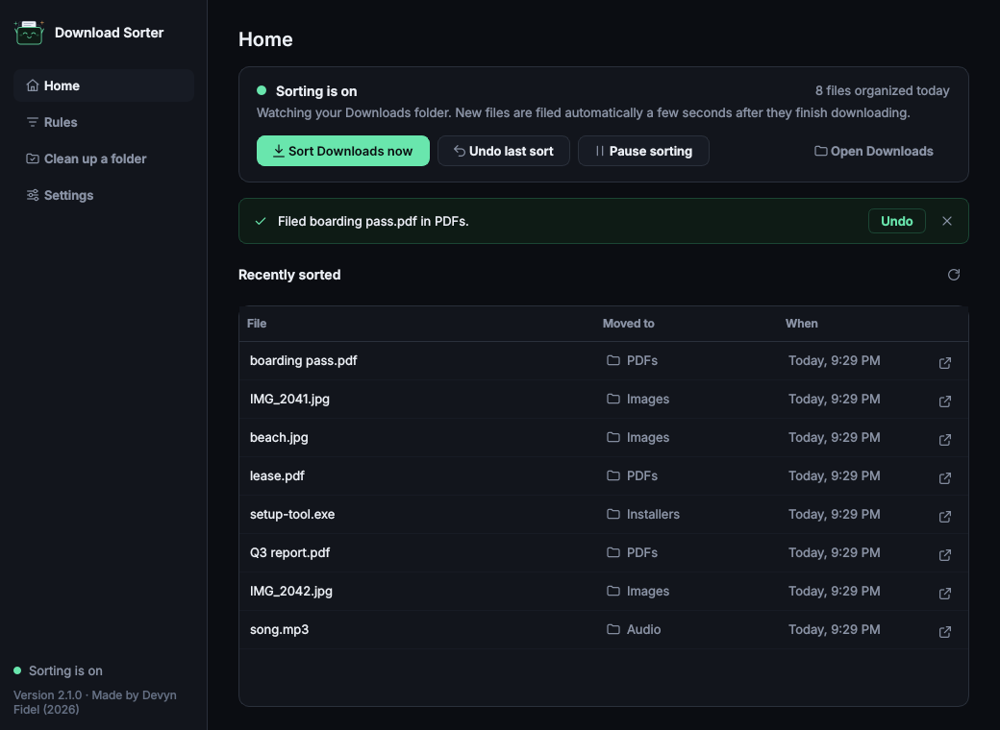

A — Refined Mint
Familiar navigation, clearer type, calmer surfaces, and a more orderly activity list. Best for an incremental refresh with minimal relearning.
Compare a refined version of the familiar interface with a file-focused dark workspace. These are native PySide6 screen previews using the same sample files, rules, and states.
Familiar navigation, clearer type, calmer surfaces, and a more orderly activity list. Best for an incremental refresh with minimal relearning.
Compact status, a larger activity workspace, and actions beside the files. A stronger structural change; the context panel stacks above the list in smaller windows.
The baseline is the screenshot published in the repository. Its sample files and app version differ from the new rendered previews; A and B use matching current fixtures.

Home: A preserves the status card. B uses a slim status strip and a side panel; compare the amount of activity visible and the reach to sort, pause, and undo.
Rules: A keeps filename testing beneath the rules. B brings it above the ordered table for quicker feedback. Rule precedence is unchanged.
Cleanup and Settings: B adds step labels to cleanup and a compact Settings section index. Both preserve the current options, use consistent spacing, and wrap long descriptions.
Setup and dialogs: A refines the existing structure. B adds a progress bar and tighter mascot area. Shared controls carry the same visual language across each direction.
Tradeoff: B provides more activity height at the standard size but gives destinations less horizontal room. At the minimum size its actions stack above the list. A remains the more familiar, broadly balanced layout.
Both concepts were rendered at the standard and minimum window sizes with Qt scale factors of 1, 1.5, and 2. This review branch includes 100% images at both sizes; the full scale matrix can be regenerated from preview-source.zip. All scale manifests are included. Long paths, empty states, paused/stopped sorting, unsaved changes, and notification states are included. See the validation report for exact results and remaining limits.
These are static design previews, not two released versions of the application. Image controls do not operate on files. Offscreen scaling checks do not replace a physical multi-monitor DPI test. Screen-reader behavior and complete interactive flows have not been certified.